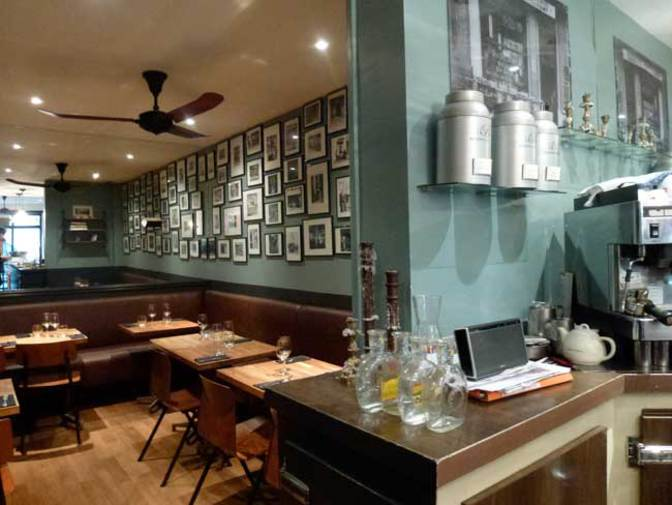

Attention, ceci est une version cheap !
62 Rue de Bellechasse, 75007 Paris
En hommage à l’enseigne de feu la célèbre brasserie voisine du Moulin Rouge que tenait son grand-père John (voir photo derrière le bar), Thomas Lousteau a baptisé son premier bistrot ’Chez Graff’. Un repaire nettement plus sage que celui de son aïeul côté décor (chaises vintage post-Prouvé, tables et parquet en bois clair, vieilles photos encadrées..) et côté faune, puisqu’on est ici en plein 7e policé, juste à côté..